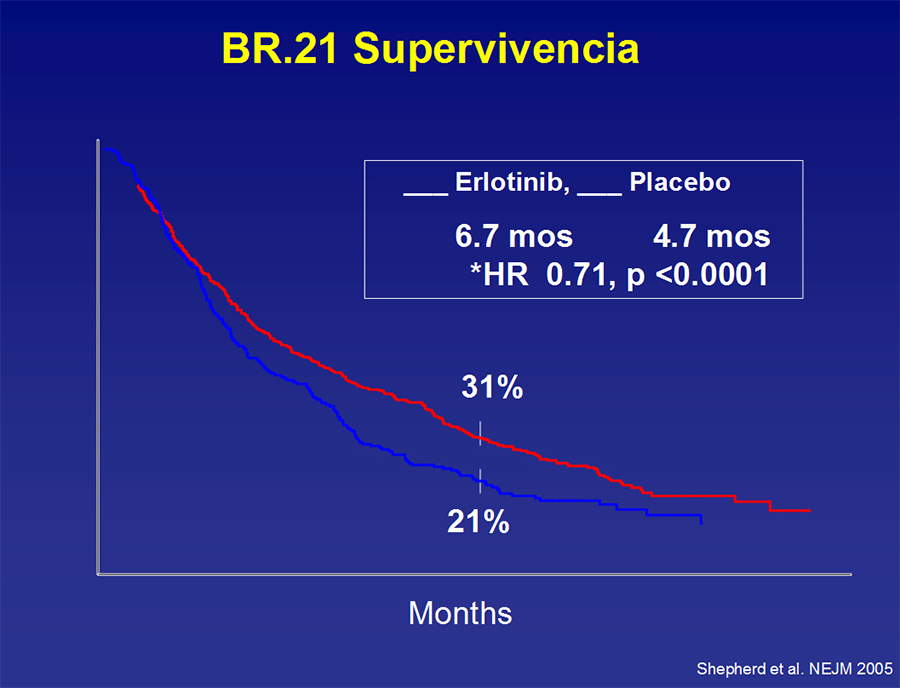
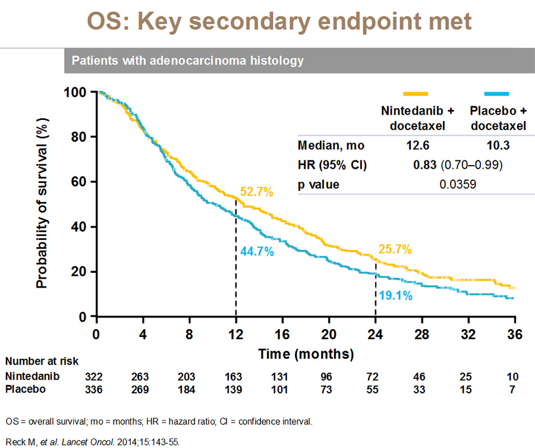

MÓDULO 5 : Tratamiento de la enfermedad avanzada en segunda línea

5.3 Agentes biológicos
Erlotinib en pacientes sin mutación de EGFR
Erlotinib es un inhibidor de la tirosina-kinasa (TKI) del EGFR.
Erlotinib en el estudio randomizado BR.21 frente a placebo, tras progresión a quimioterapia basada en platino demostró en pacientes no elegibles para tratamiento de QT un beneficio significativo en supervivencia de 6,7 vs 4,7 meses (HR 0.7; IC 95% 0.58-0.85 P=0,001) en segunda o tercera línea de tratamiento. El beneficio en supervivencia fue independiente de la histología (escamoso versus adenocarcinoma), con un aumento de la calidad de vida de los pacientes, lo que llevó a su aprobación.
Otros tres estudios fase III publicados (TITAN, HORG y DELTA) han demostrado similar TR, SLP y SG de erlotinib con respecto a quimioterapia (docetaxel o pemetrexed) en previamente tratados.
El estudio TAYLOR comparó erlotinib frente a docetaxel en segunda línea de pacientes con CNMP sin mutación de EGFR. La mediana de SG fue de 8·2 m (95% CI 5·8–10·9) con docetaxel versus 5·4 m (4·5–6·8) con erlotinib ([HR] 0·73, 95% CI 0·53–1·00; p=0·05). La SLP también fue mayor con docetaxel: SLP 2·9 m (95% CI 2·4–3·8) con docetaxel versus 2·4 m (2·1–2·6) con erlotinib (HR 0·71, 95% CI 0·53–0·95; p=0·02).
Un meta-análisis de 6 estudios randomizados con 900 pacientes objetivó una menor SLP con terapia anti EGFR frente a QT en pacientes sin mutación de EGFR. SLP (HR 1.37; IC 95% 1.20-1.56 P < 0,00001). No hubo diferencias en SG (HR 1.02; IC 95% 0.87-12 P < 0,81).
Un estudio francés reportó una mayor SLP y SG para QT frente a tratamiento anti EGFR en segunda línea de tratamiento en 1278 pacientes. SLP 4.3 vs 2.83 m. (HR 0.66; IC 95% 0.57-0.77). SG: 8.39 vs 4.99 (HR 0.7; IC 95% 0.59-0.83).
En base a estos datos, erlotinib en pacientes con tumores sin mutaciones activadoras de EGFR, solo está indicado cuando otras opciones de tratamiento de quimioterapia no se consideran adecuadas.


Afatinib: carcinoma escamoso
El estudio de fase III LUX-Lung 8 randomizó a pacientes con carcinoma escamoso de pulmón avanzado previamente tratado a recibir afatinib versus erlotinib. La SLP fue mayor con afatinib que con erlotinib: 2·4 m [95% CI 1·9–2·9] vs 1·9 m [1·9–2·2]; [HR] 0·82 [95% CI 0·68–1·00], p=0·0427). La SG también fue mayor en el grupo de afatinib 7·9 m [95% CI 7·2–8·7] vs 6·8 m [5·9–7·8]; HR 0·81 [95% CI 0·69–0·95], p=0·0077). La toxicidad G3/4 fue similar en ambos grupos (57%) pero afatinib se asoció a una mayor calidad de vida.
En base a este este estudio afatinib fue aprobado para el tratamiento de pacientes con carcinoma escamoso de pulmón avanzado previamente tratado.
Nintedanib
Nintedanib es un potente inhibidor oral de toda la vía de la angiogénesis, inhibe las kinasas de VEGFR 1/2/3, PDGFR y FGFR 1/2/3.
El estudio fase III randomizado LUME-Lung 1 estudió la combinación de docetaxel + nintedanib versus el brazo estándar de docetaxel solo. Se incluyeron 1314 pacientes con CNMP avanzado con ECOG PS 0-1 que habían progresado a una primera línea de tratamiento con quimioterapia.
Aunque los resultados de supervivencia en la población global no fueron estadísticamente significativos, el análisis jerarquizado y pre-planeado en el subgrupo de 658 pacientes con histología de adenocarcinoma, demostró un aumento significativo de la supervivencia con la combinación de docetaxel + nintedanib (12.6 vs 10.3) meses, con un HR de 0,82 (IC 95% 0,70-0,99).
La adición de nintedanib al tratamiento con docetaxel, supone también la adición de sus efectos adversos. Se observó un mayor número de AA grado ≥ 3 en los pacientes tratados con la combinación, especialmente AA gastrointestinales y elevación de enzimas hepáticas. Sin embargo, no hubo un deterioro en la calidad de vida.
Nintedanib está aprobado en combinación con docetaxel en pacientes con adenocarcinoma de pulmón que han progresado a una primera línea de quimioterapia.

Ramucirumab
Ramucirumab es un anticuerpo monoclonal humano IgG1 que se une específicamente al dominio extracelular de VEGFR-2, siendo, por tanto, un inhibidor de la angiogénesis.
El ensayo fase III randomizado REVEL comparó la combinación de docetaxel + ramucirumab versus docetaxel solo en pacientes con CNMP avanzado que habían progresado a una línea de quimioterapia basada en platino. En este estudio ramucirumab en combinación con docetaxel demostró una mayor SG (m SG 10.5 vs 9.1 m, HR 0.86; IC95% 0.75-0.98, P 0.032) y una mayor SLP (m SLP 4.5 vs 3 m, P < 0.0001) en comparación con placebo/ docetaxel independientemente de la histología y de la respuesta previa al tratamiento de primera línea.
Esta modesta mejora en la SG se acompañó de una mayor toxicidad.
Ramucirumab está aprobado por la EMA pero no está financiado en España para el tratamiento del CNMP.